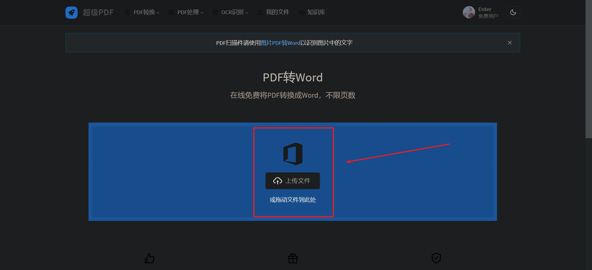

关于免费下载百度文库文章的教程
一.你需要准备的工具: 计算机；
二.课前备注：
本文介绍两种方式来免费下载百度文库的文章，在学习第一个教程前，请首先保证你使用的浏览器已经安装油猴插件（tampermonkey），没有的话请移步到上一篇文章（关于使用插件刷学习通网课的教程）学习并安装插件；第二个教程并不需要提前准备，但使用起来相对较麻烦一点；如果有时间和兴趣的话推荐两种都学会。
二.教程正文：
教程一
打开已安装油猴插件的浏览器，在地址栏输入以下网址,回车打开：
https://greasyfork.org/en/scripts/398195
打开后如图所示：
英文看不懂？没关系！
你可以点击黄色箭头内的框框来改变语言，当然也可以点击红色箭头指的绿色按钮
看到熟悉的界面了没，点击安装：
安装好了吗？现在让我们去百度文库：打开你先下载文档的网页链接：
例如: https://wenku.baidu.com/view/bb59744059f5f61fb7360b4c2e3f5727a4e9246a.html#
看到右侧界面的小按钮了没有？
点击下载:
是不是跳转到了新的界面(红色就是下载，黄色框内可以选择导出文档的格式):
不出意外的话，他应该让你关注一个公众号，那就关注吧，毕竟有求于人嘛……
待下载完成，打开就可以了…
教程二
好了，让我们看看第二种方法，这一方法是下载器+转换器的方法，使用起来较麻烦，但是也可以作为备用教程；
1.下载冰点文库下载器
打开链接就可以下载了：https://liuxiying.lanzous.com/iIsQejl009e
好了，你应该下载完了，打开之后是这样的：
看到上方有个地址栏了吗，把你要下载文档的链接扔进去,点击下载：
ok，静静等一会，下载完了吗？
是不是发现有点不对，是的，无论文库格式是啥，他下载后都是pdf格式，这个就很烦。
不过我们也有解决办法，那就转一下呗，
转换的话有很多应用可以换成，例如格式工厂，candypdf等
不过也有一些网站可以转换，这里就推荐一个吧
转换网站：**https://xpdf.net/**，打开后这样的：
框内你可以选择功能，打开后是这样的：

剩下的我觉得聪明的你可以完成了，待转化结束，任务就完成了；
三.补充一下
1.无论是哪种方式，下载出来的文件都可能与原文件有区别，特别是文档内有大量表格和图片时；
2.插件和软件非本文作者开发，随时有可能被和谐，不过近期应该没啥问题；
3.若有能力，还望支持正版！